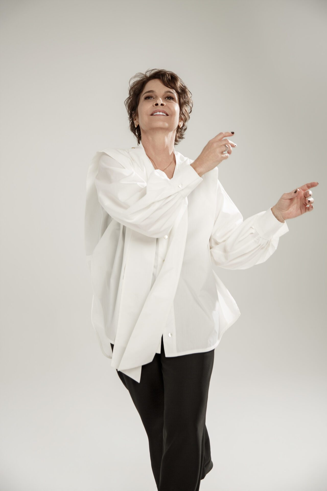
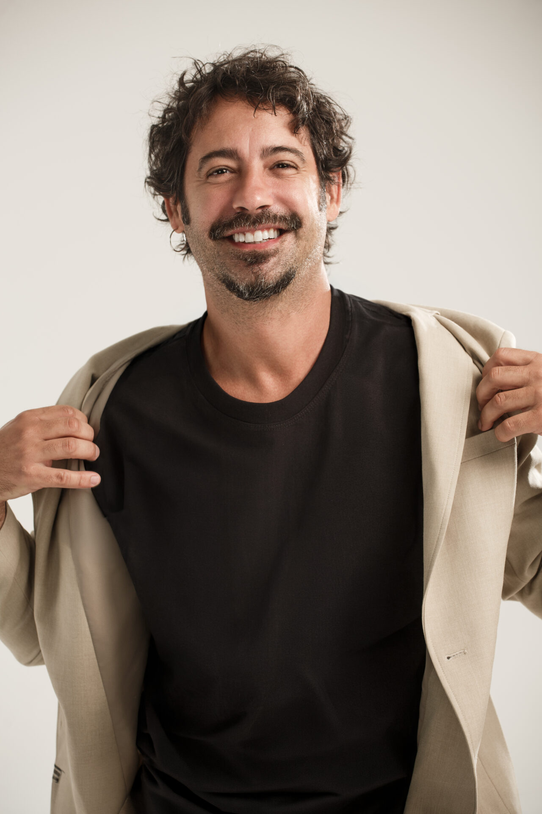

Inter Alia, de mesma autora de Prima Facie, estreia com Drica Moraes no Teatro Vivo

Inter Alia, texto da dramaturga australiana Suzie Miller, estreiou na última sexta-feira, 31 de julho, no Teatro Vivo, em São Paulo, com Drica Moraes no papel da juíza Jessica, Caco Ciocler e Caio Cesar Passos completando o elenco e com direção de Rodrigo Portella.
A montagem chega ao Brasil um ano depois da estreia mundial em Londres e repete a rota de Prima Facie, peça anterior de Miller que virou fenômeno no país com Débora Falabella.
A idealização e a produção são de Luciano Borges, o mesmo responsável por trazer o texto anterior da autora ao Brasil, com realização da Borges e Fieschi Produções Culturais e patrocínio de Vivo e Prio por meio da Lei Rouanet.
O que a peça conta
Como em Prima Facie, Suzie Miller parte do universo jurídico, território que conhece de dentro: antes de escrever para o teatro, ela trabalhou como advogada. Jessica é uma juíza reconhecida pelo empenho em tornar o sistema judiciário mais humano e acolhedor. Ao lado do marido Michael, também advogado, e do filho adolescente Harry, ela acredita viver uma rotina equilibrada entre carreira e família, até que um acontecimento inesperado derruba essa arquitetura e a obriga a confrontar as próprias convicções sobre justiça e maternidade.
A peça se interessa menos pelo veredicto e mais pelo que a crise revela: a divisão desigual do trabalho doméstico e emocional dentro de casa, a criação dos meninos na era digital e os limites entre a ética pública e a lealdade familiar. Na produção original londrina, o acontecimento que desestrutura a protagonista é a acusação de estupro contra o filho, feita por uma colega depois de uma festa; a juíza que passou a carreira julgando casos de violência sexual se vê, de uma hora para outra, do outro lado do tribunal.
De Rosamund Pike a Drica Moraes
Em Londres, Inter Alia teve estreia mundial no Lyttelton Theatre, sala do National Theatre, em 23 de julho de 2025, com prévias desde o dia 10 daquele mês. A protagonista era Rosamund Pike, que voltava aos palcos depois de 14 anos, no papel da juíza Jessica Parks, sob direção de Justin Martin. A temporada esgotou antes mesmo de os ensaios começarem, e a crítica recebeu bem a montagem: no The Guardian, a resenha de Emma John deu quatro de cinco estrelas. A encenação foi filmada pelo National Theatre Live e exibida em cinemas a partir de setembro de 2025.
O texto seguiu em cartaz em Londres no primeiro semestre de 2026, em temporada limitada no Wyndham's Theatre, no West End, e tem transferência marcada para a Broadway: as apresentações no Music Box Theatre, em Nova York, começam em 10 de novembro de 2026, novamente com Rosamund Pike. A montagem paulistana coloca o público brasileiro diante do texto antes da estreia americana.
A equipe brasileira
A direção é de Rodrigo Portella, nome associado a Tom na Fazenda, montagem de 2017 que lhe rendeu os principais prêmios do teatro brasileiro e projeção internacional. A tradução é de Alexandre Tenório, com dramaturgismo de Bianca Ramoneda. O cenário é assinado por Portella e Mina Quental, o figurino por Karen Brusttolin, a iluminação por Ana Luzia di Simoni e a trilha sonora por Federico Puppi, com direção de movimento de Denise Stutz.
Drica Moraes, que completa 40 anos de carreira, encara o texto como protagonista, no papel que em Londres consagrou o retorno de Pike ao teatro. Caco Ciocler vive Michael, o marido, e Caio Cesar Passos interpreta Harry, o filho do casal.


Depois do fenômeno Prima Facie
A chegada de Inter Alia se apoia no terreno preparado pela peça anterior da autora. A montagem brasileira de Prima Facie, dirigida por Yara de Novaes e protagonizada por Débora Falabella, estreou em 2024, passou por Porto Alegre em temporada recente e segue em turnê pelo país. No primeiro solo da carreira, Falabella recebeu os prêmios Shell, APCA, Arcanjo e APTR, e a produção ultrapassou a marca de 150 mil espectadores, com sessões esgotadas em cidades como Rio de Janeiro, São Paulo, Brasília, Belo Horizonte, Salvador e Curitiba.
Nos dois textos, Miller usa o tribunal como lente para discutir responsabilidade, poder e a distância entre a norma e a vida. Em Prima Facie, uma advogada criminalista especializada em defender acusados de crimes sexuais se torna vítima; em Inter Alia, uma juíza comprometida com o combate à violência de gênero vê a suspeita entrar pela porta de casa. São espelhos invertidos do mesmo dilema.
Serviço
Inter Alia.
Teatro Vivo, Avenida Dr. Chucri Zaidan, 2460, Vila Cordeiro, São Paulo.
Sessões às sextas e sábados, às 20h, e aos domingos, às 18h, com temporada até 20 de setembro.
Duração: 90 minutos.
Classificação: 12 anos.
Ingressos a R$ 200 (inteira) e R$ 50 (preço popular, em cota promocional ligada ao plano de democratização da Lei Rouanet), na plataforma Sympla e na bilheteria do teatro, que funciona nos dias de espetáculo.